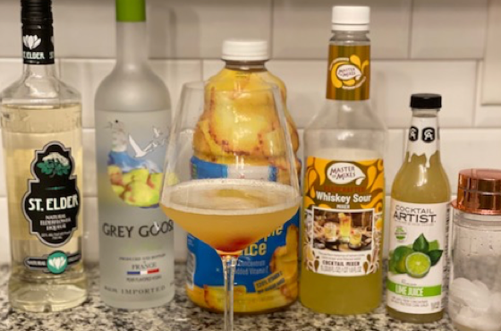
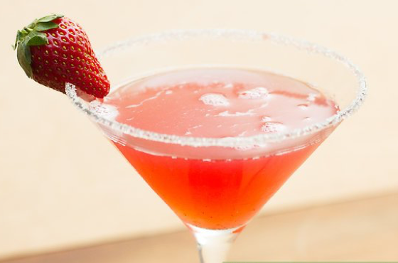

Beverages
Ingredients
- 1½ oz Pear Grey Goose Vodka
- 1 oz St. Germain Elderflower liquer
- 1 oz pineapple juice
- 1 oz sour mix
Directions
- Combine all ingredients.
- Shake with ice.
- Pour mixture in a cocktail glass.
- Add a cherry on top.
- ENJOY!!!

Submitted by Leslie Moore
My husband and I's favorite Charlotte restaurant is 131 Main. I love to enjoy a cocktail while there and the when I stumbled across the Pearfection I feel in love! It took practice to recreate this but I finally got and I love to share with everyone.

Cheesecake Factory Strawberry Martini
Ingredients
- 2 cups strawberries
- 2 shops simple syrup
- ice
- 2 shots vodka
- martina skaker
- muddler
- strainer
Directions
- Clean, core, slice and then muddle strawberries.
- Add to martini shaker (add as many as you like).
- Pour in vodka, simple syrup, and A LOT of ice.
- Shake- A LOT
- Shake some more.
- Shake a couple more times. (You want ot shake it REALLY WELL)
- Pour over a strainer into martini glass.
Submitted by Mollie Bolin
My friend Hilary makes this for us girlfriends at all of her gatherings. She makes them so well I practically refuse to come over unless I know there will be strawberry martinis. I often have several and end up very intoxicated but happy.